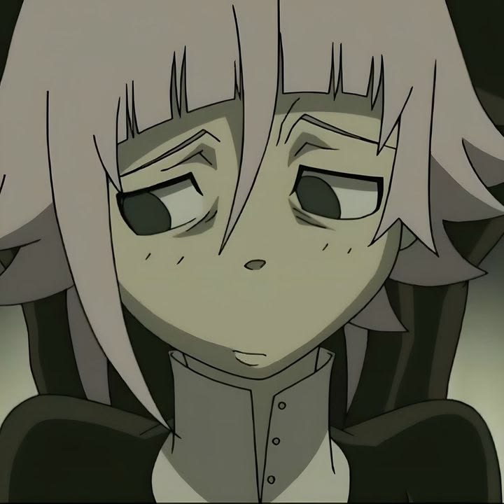

Semny
Introvertido
Anormal
Amador de animes
Sobre mi:
Soy una persona muy Introvertida, me gusta pasar tiempo en mi casa
y porque no me gusta salir de mi casa casi nunca salgo,
me gusta jugar video juegos y programar.
Siempre me desvelo hasta la madrugada aveces nisiquiera
haciendo nada solo con mi celular procrastinando.
Me distraigo demasiado y se me olvidas las cosas que
estaba apunto de hacer.

descripcion:
Hola, soy Semny soy una persona que le gusta mucho la programacion
estudio de manera autodidacta software y sistemas.
Me encanta las esteticas antiguas de internet aun que por fuera parezca normal,
las esteticas como el anime algunas cosas antiguas como las camaras digitales.
 Siempre me desvelo viendo animes o progrmando.
Mi proyecto mas grande fue hacer un sistema de ventas
de una tienda desde mi celular con termux, aun que tengo
una computadora de igual manera lo hice en mi celular.
Siempre me desvelo viendo animes o progrmando.
Mi proyecto mas grande fue hacer un sistema de ventas
de una tienda desde mi celular con termux, aun que tengo
una computadora de igual manera lo hice en mi celular.
 Tengo ahora estoy haciendo en mi tiempo libre
un launcher de minecraft en rust,tambien eh echo
servidores de minecraft.
Actualmente sigo aprendiendo mucho mas de rust,
ya llevo usandolo por 6 meses y me encanta es uno de mis
lenguajes favoritos de los pocos que probe.
Tengo ahora estoy haciendo en mi tiempo libre
un launcher de minecraft en rust,tambien eh echo
servidores de minecraft.
Actualmente sigo aprendiendo mucho mas de rust,
ya llevo usandolo por 6 meses y me encanta es uno de mis
lenguajes favoritos de los pocos que probe.
Ahora estoy probando como funcionan las bases de datos, estoy
usando ahora MongoDb, estoy pensando usar tambien MySql.